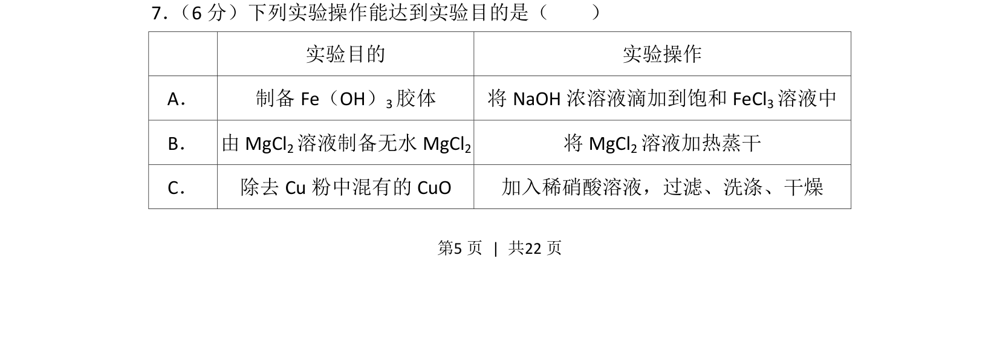
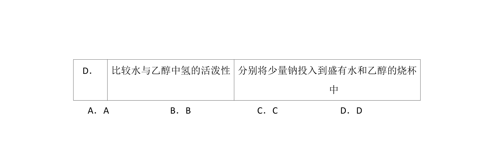
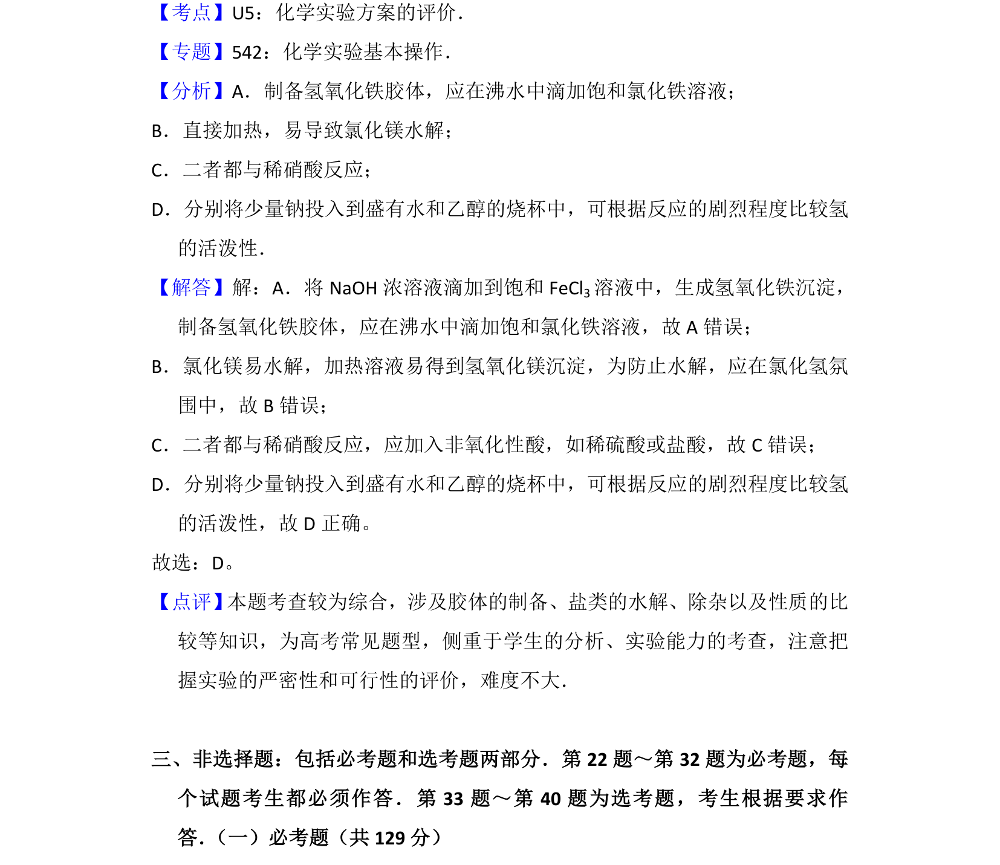

考点：胶体制备 盐类水解 金属除杂 实验操作规范


本题为化学实验操作与目的匹配选择题，考查常见实验操作的正确性判断

📄 原 PDF 第 5 页：
素材/真题/吉林/2008-2024·（吉林）化学高考真题/2016年高考化学试卷（新课标Ⅱ）（解析卷）.pdf
7． （6分）下列实验操作能达到实验目的是（ ） 实验目的 实验操作 A． 制备Fe（OH） 3胶体 将NaOH浓溶液滴加到饱和FeCl 3溶液中 B． 由MgCl 2溶液制备无水MgCl 2 将MgCl 2溶液加热蒸干 C． 除去Cu粉中混有的CuO 加入稀硝酸溶液，过滤、洗涤、干燥